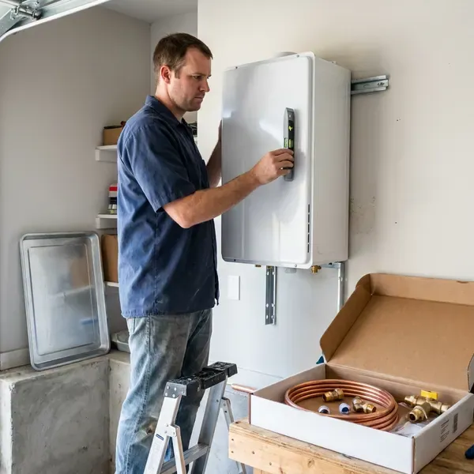

Tankless Water Heater Replacement in Murfreesboro, TN
BGV Plumbing provides professional tankless water heater replacement services across Murfreesboro, TN, making sure your home has efficient hot water.
- Code Compliant
- Licensed Gas Line Technicians
- Top Brands Available
- Fast Tankless Installation

Need a Tankless Water Heater Replacement in Murfreesboro, TN?
Our techs carry common tankless models and venting kits, so most swaps finish in a single visit.
Your Trusted Source for Tankless Water Heater Replacement in Murfreesboro, TN
When it comes to tankless water heater replacement in Murfreesboro, TN, BGV Plumbing is the reliable choice. We understand the demands that homes in Tennessee place on water heaters, from mineral content to varying usage. We make sure your new tankless unit is properly sized and expertly installed for optimal performance and longevity.
Our expertise includes:
- Condensing unit installs with PVC venting and condensate neutralizers
- Correct sizing and model selection for your home.
- Clean integration with existing plumbing and gas lines.

Additional Plumbing Replacement Services in Murfreesboro, TN
When repairs are no longer enough, our replacement services in Murfreesboro, TN deliver durable upgrades that restore full performance.


Customers
Why Choose BGV Plumbing for Tankless Water Heater Replacement in Murfreesboro, TN?
Private wells serve many rural homes in Tennessee, and some well water carries iron, sulfur or sediment that calls for filtration or treatment. Hard water is rough on tankless heat exchangers, and many early failures trace back to scale and skipped flushing. We size, install and set up each replacement so it stands up to your local water supply.
- Right-Sized Units, We calculate gallons per minute and temperature rise for your fixtures instead of guessing from square footage.
- Clean Venting, We route venting to meet manufacturer clearances from windows, doors and roof edges.
- Space Saving, Their compact design lets tankless units fit in smaller spaces, freeing up useful room in your utility closet or garage.
Citywide Coverage
BGV Plumbing proudly serves every neighborhood and community within Murfreesboro for all your tankless water heater replacement needs. Whether you are downtown or in the surrounding suburbs, our team is ready to deliver prompt and professional service.
Experienced Team
Our technicians have pulled and replaced tankless units from Rinnai, Navien, Noritz, Takagi and Rheem, so they know the quirks of each brand's error codes and mounting brackets. They also know which older units can be matched to existing venting and which need new runs.
Safety-First Approach
We take extra care with gas and water line connections, ventilation and pressure relief systems. You get a replacement that not only works properly but also meets the highest safety standards.
Trusted Certified Murfreesboro Plumbing Services Professionals
At BGV Plumbing, we take pride in providing certified plumbing services throughout Murfreesboro, TN. Backed by recognized industry credentials, our experienced plumbers combine technical skill with genuine customer care. Whether it is repair, installation, or maintenance, we follow strict safety and quality standards to deliver long-lasting results you can trust.
Call Us Now PHCC Plumbing Contractor Recognition
PHCC Plumbing Contractor Recognition Better Business Bureau (BBB) Accreditation
Better Business Bureau (BBB) Accreditation Angi Certified Pro
Angi Certified Pro ISO 9001 Quality Management Certification
ISO 9001 Quality Management CertificationExpert Tankless Water Heater Replacement Services in Murfreesboro, TN
Recirculation Tankless Upgrades in Murfreesboro, TN
If you are tired of running the tap waiting for hot water, a tankless with a built-in recirculation pump can bring heat to the fixture in seconds. Navien A series and Rinnai units with internal pumps can use a dedicated return line or a crossover valve under the farthest sink. We program schedules so the pump runs only during your morning and evening peaks. That keeps gas use in check while saving thousands of gallons of wasted water a year. This upgrade is popular in long single-story ranch homes.

Tankless vs. Tank Water Heater Conversion in Murfreesboro, TN
Considering converting from a traditional tank water heater to a tankless system in your Murfreesboro, TN home? This is a common and worthwhile upgrade, but it requires specialized expertise. We handle the entire conversion, which can involve rerouting gas lines, upgrading electrical service, modifying water lines and installing new venting. Our team ensures a smooth transition, so you can enjoy the long-term benefits of a modern, efficient tankless system.
Electric Tankless Water Heater Replacement in Murfreesboro, TN
For properties without natural gas access or those looking for an all-electric solution, electric tankless water heaters are a practical choice. BGV Plumbing offers electric tankless water heater replacement services in Murfreesboro, TN. This often involves careful assessment of your home's electrical panel capacity, as these units require substantial amperage. We make sure your new electric tankless unit is installed safely and correctly, providing on-demand hot water without the need for gas lines.
Emergency Tankless Replacement in Murfreesboro, TN
A tankless heater that leaks from the heat exchanger or refuses to ignite can leave you with no hot water at all. We offer same-day emergency replacement for common models and can often get a unit installed the day you call. If your exact model is not in stock, we can sometimes do a temporary repair to restore hot water while the replacement ships. We shut off gas and water to stop any leak on arrival. Call (615) 518-0893 any time your tankless quits.
Emergency Tankless Water Heater Replacement in Murfreesboro
A sudden tankless water heater failure can leave your Murfreesboro home without hot water, which is a serious inconvenience. BGV Plumbing offers emergency tankless water heater replacement to restore your hot water quickly. We prioritize urgent situations, working to diagnose the issue and, if replacement is necessary, get a new unit installed as soon as possible. Our goal is to minimize your downtime and get your home back to normal with reliable hot water.
Tank to Tankless Conversions in Murfreesboro, TN
Converting from a 40 or 50 gallon tank to tankless frees up floor space and ends standby heat loss in a garage or closet. The catch is that tankless units usually need a larger gas line, often three quarter inch or bigger, plus new venting. We evaluate your meter size and pipe run before quoting so there are no surprises mid-job. We also cap or reroute the old flue and seal the roof penetration if it is no longer used. Expect a conversion to take a full day.
Gas Tankless Water Heater Replacement in Murfreesboro
Many homes in Murfreesboro rely on natural gas for water heating, and gas tankless units are a very efficient option. Our gas tankless water heater replacement service includes thorough inspection of your existing gas lines, proper sizing of new gas lines if needed, and secure venting to the outdoors. We put a priority on safety. All gas connections and combustion air requirements meet Tennessee and local codes, preventing potential hazards and maximizing efficiency.

Exterior Mount Tankless Units in Murfreesboro, TN
Many homes have tankless heaters mounted on an exterior wall with no venting at all, since the unit exhausts directly outside. These units face sun, rain and temperature swings, which can break down plastic covers and wiring over time. Most Tennessee winters bring a handful of hard freezes, and occasional arctic blasts can burst pipes in homes that are not ready for deep cold. When we replace them, we check the pipe cover, freeze protection settings and the electrical connection. We can add a protective pipe cover kit to shield the water and gas lines. Exterior models are often the simplest swap when the gas line is already sized correctly.
Tankless Water Heater Replacement Near Me in Murfreesboro, TN
If you are searching for tankless water heater replacement near me in Murfreesboro, TN, BGV Plumbing is your local expert. Our service area covers the whole region, so a professional plumber is always close by when you need a new, efficient hot water solution. We are known for quick response times and reliable service for all tankless installations.
Local service matters because tankless problems often show up during the busiest part of your day. Our techs are close by and can diagnose whether a repair or replacement makes more sense. We back every replacement with solid labor coverage and register your manufacturer warranty for you.
BGV Plumbing at a Glance
- Licensed and insured plumbers serving Murfreesboro, TN
- Same-day appointments and 24/7 emergency response
- Clear written estimates, no hidden fees
- 4.9-star rated by 932+ Tennessee customers
Murfreesboro Map
Murfreesboro Information
- Population
- 165,430
- Area codes
- 615/931/629
- Service area
- Murfreesboro and communities within 40 miles
- Nearby
- Smyrna, Franklin, Spring Hill, Nashville
Replacing an old tankless water heater in Murfreesboro, TN is essential for a reliable hot water supply, especially with shifting seasonal demands and mineral content that can cut into unit efficiency and lifespan.
Expert Services
Trust our professionals for reliable BGV Plumbing solutions in Murfreesboro, TN.
Our Specialized Plumbing Services in Murfreesboro, TN
At BGV Plumbing, we provide a complete range of plumbing services across Murfreesboro, TN. From leak detection to full system installations, our team ensures fast, precise, and affordable service for both residential and commercial properties. Explore our core services below:


How Our Tankless Water Heater Replacement Process Works in Murfreesboro, TN
Our tankless water heater replacement process is designed to be straightforward and stress-free for homeowners in Murfreesboro, TN.
Request a Quote
Call us at (615) 518-0893 or fill out our online form to schedule an first consultation. We will discuss your hot water needs and current system issues, and provide a clear, upfront estimate.
On-Site Assessment
Our licensed plumber will visit your Murfreesboro home to assess your existing water heating system, plumbing, gas or electrical connections and venting. This helps us recommend the right tankless model and make sure it is properly sized for your household.
Expert Installation
Once you approve the quote, our team will proceed with the professional installation of your new tankless water heater. We safely remove the old unit, make any needed plumbing or gas line changes, and make sure the new system is correctly vented and fully operational.
Frequently Asked Questions About Tankless Water Heater Replacement in Murfreesboro
The cost for tankless water heater replacement in Murfreesboro, TN usually ranges from $3,000 to $6,000, depending on the unit's brand, capacity, fuel type (gas or electric) and any needed changes to gas lines, electrical or venting. This estimate includes both the new unit and professional installation. We always provide a detailed quote upfront after assessing your needs.
A standard tankless water heater replacement, if you are upgrading from an existing tankless unit, usually takes 4 to 8 hours. If you are converting from a traditional tank water heater, the process can take longer, possibly a full day, due to extra plumbing, gas or electrical changes required for proper installation and venting.
Yes, in most areas of Murfreesboro and Tennessee, a permit is required for tankless water heater replacement, especially if it involves gas line changes or significant electrical work. Our team at BGV Plumbing will handle all required permitting so your installation is fully compliant with local building codes and safety regulations.
To prepare for tankless water heater replacement, make sure the area around your existing unit is clear and easy to reach for our plumbers. If possible, clear a path to the installation site and keep pets or children away from the work area. We will handle draining the old unit and all other technical preparations.
A direct swap typically takes four to six hours. A tank to tankless conversion with new gas and venting usually takes a full day.
To protect the life and efficiency of your new tankless water heater, regular maintenance is key, especially in areas with hard water. This typically involves annual flushing to remove mineral buildup, checking the air filter, and inspecting gas and water connections. BGV Plumbing offers maintenance plans to help keep your unit in top condition.
Most manufacturers offer 10 to 15 years on the heat exchanger and about 5 years on parts for residential use. We add our own labor warranty and register the unit for you.
Most jurisdictions in Tennessee require a permit for water heater replacement, especially when gas piping or venting changes. We take care of permits where they are required.
What People Are Saying About Our Plumbing Experts?

James P.
Our commercial plumbing system had a leak under the sink, and BGV Plumbing handled it professionally. The plumbers arrived quickly and restored everything without disruption to our customers.
Commercial Plumbing · Nashville, TN
Emily R.
I called BGV Plumbing for plumbing repair, and the technician was fast, polite, and thorough. They explained the problem clearly and fixed it the same day. I will definitely hire them again. Highly recommended!
Plumbing Repair · Nashville, TNRobert G.
The trenchless sewer replacement saved our front yard. They walked us through the camera inspection footage first so we knew exactly what we were paying for.
Sewer Line Replacement · Murfreesboro, TN
Daniel K.
A pipe burst at 11 pm and they actually answered. The plumber showed up within the hour, shut everything down, and had us back to normal the next morning. Could not ask for more.
Emergency Plumbing · Smyrna, TN
Patricia H.
We had a slab leak that two other companies could not find. BGV Plumbing located it in under an hour, explained our options, and the price matched the quote to the dollar.
Slab Leak Repair · Murfreesboro, TN
Laura S.
I scheduled a water heater replacement, and the team made the process smooth and affordable. The new unit works perfectly, and they cleaned up after completing the job.
Water Heater Replacement · Hendersonville, TN